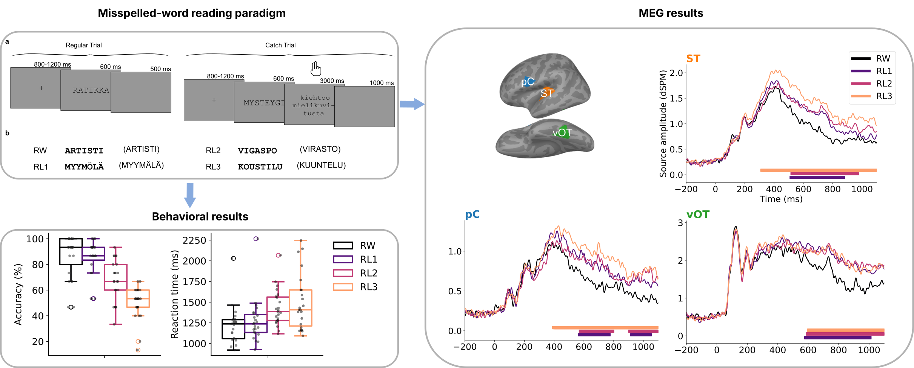

Back to the CMHC lab page
Back to the CMHC lab page
Misspelled-word reading modulates late cortical dynamics
Project Summary
Literate humans can effortlessly interpret tens of thousands of words, even when the words are sometimes written incorrectly. This phenomenon suggests a flexible nature of reading that can endure a certain amount of noise. In this study, we investigated where and when brain responses diverged for conditions where misspelled words were resolved as real words or not. We used magnetoencephalography (MEG) to track the cortical activity as the participants read words with different degrees of misspelling that were perceived to range from real words to complete pseudowords, as confirmed by their behavioral responses. In particular, we were interested in how lexical information survives (or not) along the uncertainty spectrum, and how the corresponding brain activation patterns evolve spatiotemporally. We identified three brain regions that were notably modulated by misspellings: left ventral occipitotemporal cortex (vOT), superior temporal cortex (ST), and precentral cortex (pC). This suggests that resolving misspelled words into stored concepts involves an interplay between orthographic, semantic, and phonological processing. Temporally, these regions showed fairly late and sustained responses selectively to misspelled words. Specifically, an increasing level of misspelling increased the response in ST from 300 ms after stimulus onset; a functionally fairly similar but weaker effect was observed in pC. In vOT, misspelled words were sharply distinguished from real words notably later, after 700 ms. A linear mixed effects (LME) analysis further showed that pronounced and long-lasting misspelling effects appeared first in ST and then in pC, with shorter-lasting activation also observed in vOT. We conclude that reading misspelled words engages brain areas typically associated with language processing, but in a manner that cannot be interpreted merely as a rapid feedforward mechanism. Instead, feedback interactions likely contribute to the late effects observed during misspelled-word reading.
Below is a graphical summary of the main results: the experimental paradimg, behavioral and MEG results.
